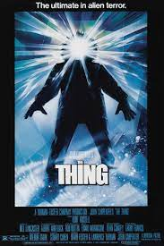
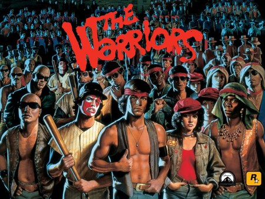
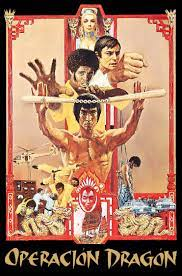
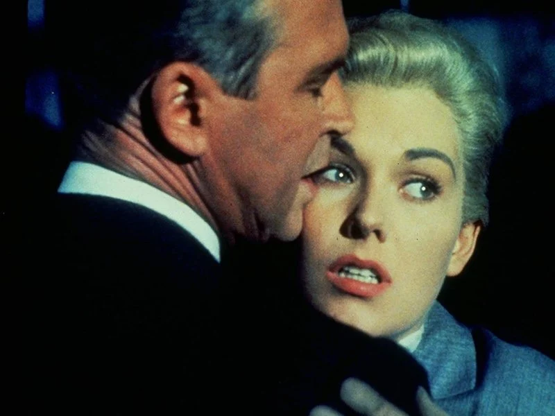
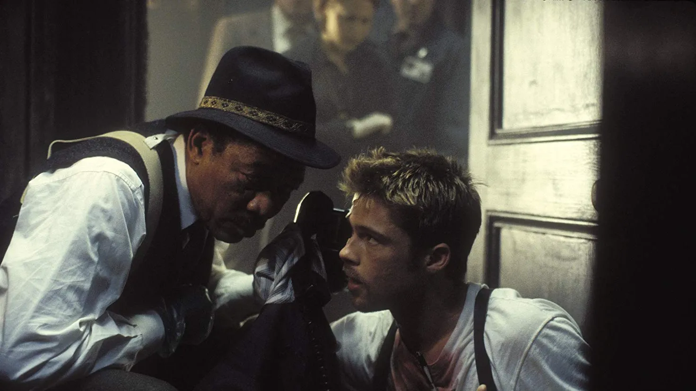
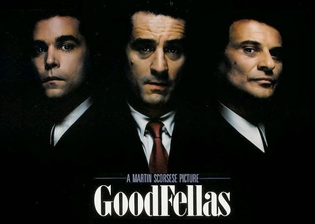

TOP 3 PELICULAS DE TERROR
1.- 'El resplandor' ('The Shining', 1980)

Dirección: Stanley Kubrick. Reparto: Jack Nicholson, Shelley Duvall, Danny Lloyd, Scatman Crothers, Barry Nelson, Philip Stone...
Ese genio indiscutible llamado Stanley Kubrick dominó todos y cada uno de los géneros que abordó a lo largo de su carrera. No es de extrañar dado su excepcional talento que su incursión
en el terror diese como resultado una obra maestra como lo es 'El resplandor'. Una proeza técnica, formal y conceptual que te sumerge en los imposibles pasillos y habitaciones delhotel Overlook mientras te invita a perder la cabeza junto al desquiciado Jack Torrance en una pesadilla del más alto nivel.2.- 'Halloween' (1978)

Dirección: John Carpenter. Reparto: Jamie Lee Curtis, Donald Pleasence, Nancy Loomis, P.J. Soles, Charles Cyphers, Kyle Richards...
odando en unos 20 días y con una limitación de recursos más que obvia —tenían que recoger reutilizar hasta las hojas que aparecían en el suelo de la calle entre plano y plano—, el
maestro John Howard Carpenter revolucionó el terror sentando cátedra y marcando un antes y un después en el subgénero del slasher con este clásico de culto imperecedero. Una miradafantasmagórica sobre el mal más puro, encarnado en un gigantesco Michael Myers aferrado al imaginario popular desde hace cuarenta años. en el terror diese como resultado una obra maestra como lo es 'El resplandor'. Una proeza técnica, formal y conceptual que te sumerge en los imposibles pasillos y habitaciones delhotel Overlook mientras te invita a perder la cabeza junto al desquiciado Jack Torrance en una pesadilla del más alto nivel.3.- 'La cosa' ('The Thing', 1982)
Dirección: John Carpenter. Reparto: Kurt Russell, Wilford Brimley, Keith David, David Clennon, Richad Dysart, Donald Moffat...
Aunque mi obra predilecta de John Carpenter sea la genial 'En la boca del miedo', he de reconocer que el master of horror tocó techo en 1982 con este remake de 'El enigma de
otro mundo', que dirigió su idolatrado Howard Hawks en 1951. Con 'La cosa', el autor refinó hasta su punto álgido su sello personal, desatando el terror en medio de la Antártida en un ejercicio aterrador, con unos efectos visuales aún hoy fascinantes y con una representación del mal que, de nuevo, trasciende los límites de lo humano.TOP 3 PELICULAS DE ACCION
1.- 'The Warriors, los amos de la noche' ('The Warriors')
Dirección: Walter Hill
Reparto: Michael Beck, David Harris, James Remar, Deborah Van Valkenburgh, Thomas G. Waites, Dorsey Wright
De entre el nutrido listado de notables filmes de acción que engrosan la filmografía de Walter Hill me veo obligado a quedarme con esta 'The Warriors'.na épica urbana ambientada en una Nueva York dominada por las bandas que bebe de la Grecia clásica y que a día de hoy continúa siendo tan fresca, icónica y sorprendente como el primer día. Un pequeño largometraje reconvertido en clásico de culto por méritos propios.2.- 'Operación dragón' ('Enter the Dragon')
Dirección: Robert Clouse Reparto: Bruce Lee, John Saxon, Ahna Capri, Shih Kien, Jim Kelly, Robert Wall
Quién mejor que Bruce Lee para inaugurar un listado que recoge las mejores cintas de acción de todos los tiempos, y qué mejor película para representar al icono de las artes marciales que 'Operación Dragón'; probablemente, la mejor cinta de toda la filmografía de la estrella.
3.- '1997: Rescate en Nueva York' ('Escape From New York')

Dirección: John Carpenter Reparto: Kurt Russell, Lee Van Cleef, Ernest Borgnine, Donald Pleasence, Season Hubley, Isaac Hayes
El maestro John Howard Carpenter tan pronto te dirige un clásico imperecedero del cine de terror como 'Halloween' como se saca de la manga una película de acción distópica
de la talla de 'Rescate en Nueva York'. Una clase magistral de economía de recursos, con un uso ejemplar de la urgencia en el guión y un protagonista irrepetible cuya imagen ychulería le han hecho trascender como icono popular. ¡Larga vida a Serpiente Plissken!TOP 3 PELICULAS DE SUSPENSO
1.- 'Vértigo (de entre los muertos)' ('Vertigo', 1958)
Dirección: Alfred Hitchcock. Reparto: James Stewart, Kim Novak, Henry Jones, Barbara Bel Geddes, Tom Helmore.
Como no podía ser de otro modo, iniciamos este listado de la mano del maestro del suspense, y lo hacemos con el que, probablemente, sea su largometraje más
reverenciado. No es para menos, porque 'Vértigo' es una clase magistral no sólo de dirección e interpretación —soberbios Stewart y Novak—; también es una guía sobrecómo aplicar la psicología al género dando forma a dos horas tan turbadoras como apasionantes.2.- 'Seven' (Se7en)' (1995)
Dirección: David Fincher. Reparto: Brad Pitt, Morgan Freeman, Gwyneth Paltrow, Kevin Spacey, John C. McGinley.
Del maestro del suspense clásico pasamos al que, probablemente, ocupe el mismo puesto en el panorama contemporáneo. De entre la extensa filmografía de David
Fincher, en la que figuran joyas como 'Zodiac' o 'Perdida', me he visto obligado a elegir una 'Seven' que además de contar con uno de los villanos más icónicos de finales delsiglo XX, remata su fantástica narrativa con un tercer acto aterrador.3.- 'Uno de los nuestros' ('Goodfellas', 1990')
Dirección: Martin Scorsese. Reparto: Ray Liotta, Robert De Niro, Joe Pesci, Lorraine Bracco, Paul Sorvino.
Otro maestro que bien podría tener cuatro o cinco entradas en esta lista es Martin Scorsese. 'Casino', 'Shutter Island', 'Infiltrados', 'Taxi Driver'... Cualquiera de ellas podrían
haber figurado en el compendio, pero mi elegida ha sido una 'Goodfellas' que narra la arquetípica historia criminal de ascenso y caída con un tono y un pulso imposibles,impulsada por un reparto y unos personajes brillantes.